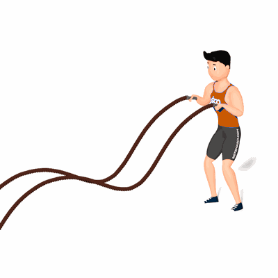

Ondulação Vertical Simultânea da Corda Naval

O exercício irá proporcionar uma alta queima de caloria, fortalecimento da musculatura do core, melhoria da capacidade respiratória e cardiovascular e equilíbrio corporal.
Ficha Técnica
Tipo: CrossFit
Grupo Muscular: Corpo
Aparelho: Nenhum
Músculos: Nenhum
Como realizar
- Em pé, com os pés afastados e próximos à largura dos ombros;
- Mantenha os joelhos semiflexionados e o tronco ligeiramente inclinado à frente;
- Segurando cada extremidade da corda com uma das mãos, inicie o exercício ondulando a corda na vertical com as duas mãos ao mesmo tempo.
 RC STORE
RC STORE